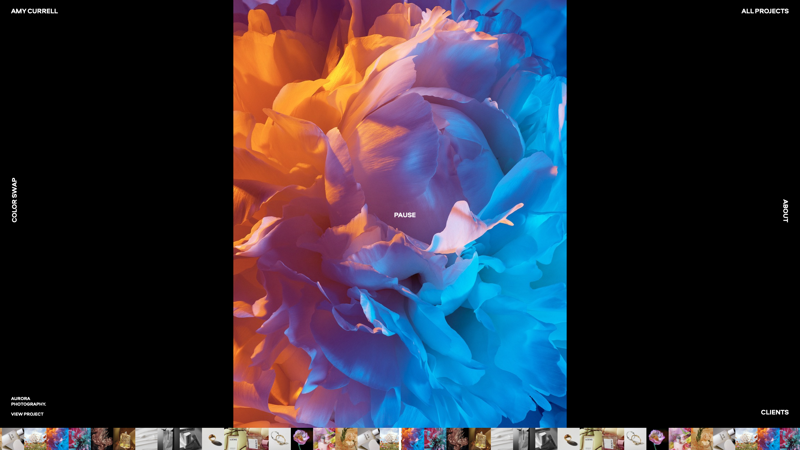

What are the videos used for? Can you find evidence of video used with intent, which enhances information comprehension, retention and appeal?
Amy Currell's photography portfolio incorporates images, animations, sound, and videos that she made herself in order to showcase them to the public and potential employers. All the photography was made with an intent to promote various brands or products. However, the way they are presented on the site enhances the appeal not only of the products themselves, but of Amy's skills as a professional photographer. The job often depends on how you can promote and create art youself, so that it is enticing and of high quality. This website enhances the user's comprehension of Amy's abilities and because of the unique design, where photos follow cursor movements or enable the user to pause or mute the videos without visible buttons helps with memorising the experience.

At the homepage, the images and videos are connected into a video loop that skips between into different projects you can read more about.
On the main page, there is also an animation that unveils photos as you move the cursor across the screen.
Age UK uses video to share essential tips on using the internet as a senior or to share the experience of other people that age managing their technology use. In this way, the videos are used with the intent of making the content seem not so foreign or scary and show users that other individuals their age benefit from technology use and you can to, if you are willing to learn. It makes the connection to users less artificial and more related to real-life needs of seniors. Additionally, those videos make the content more accessible and enhance retantion for people who learn better watching and listening to a video rather than reading static words/information.
What benefits and caveats of video use can you witness?
When it comes to Amy's website, it benefits from being a highly visual medium with minimal text due to her craft of telling stories through images. Luckily for her, "viewers retain 95% of a message when they watch it in a video compared to 10% when reading it in text" [1]. That said, the film and photography scene is oversaturated with images and different techniques of presenting artistic work, so a recruiter who views those all the time might not react to this portfolio the same as someone who has no knowledge of the industry. However, Amy's website benefits from intrinsic multimodality that combines video, audio, and animation to present the overall product. This allowed her for the flexibility of expression in developing a website that she wants to be associated with, which in turn affects how people perveice her and her work. It is said that images convey a thousand words, so the website will definitely appeal to those who are visual learners. That said, not everyone may like that there are no contextualising statements next to each project or the chaotic layout of the website with no clear clickable areas.
Age UK definitely aimed to improve the user's retention while posting those informative YouTube videos. Those help to accomodate not only different learning styles, but also give a kind face to an obstacle that the website aims to help with. It makes the viewers feel less lonely if they are struggling to use technology at their age and shows them that anyone can do it. The videos are encouraging and informative. Due to keeping the videos up to 3 minutes, they catch attention and feel worth watching even for those with a short attention span. The videos are not present on every page or overused, instead they are only added if appropriate, to enrich the experience of users with general topics and general information like "how to make the most of of internet". I don't see any caveats with the use of videos here, I think it's important that older people see themselves represented as capable and video interviews humanise the experience of learning at an old age. It is not emabarrassing, it's helpful!
How is video combined with other media (images, text, audio) in order to synthesise a multimedia production?
Age UK is heavily text based, as an educational resource. Occasionally, it adds videos and images of older individuals, as intended audience members, and icons representing what the text is about. This makes is easier for the users to navigate the website and finding the content that they need without having to read everything.
Amy's portfolio is much more sophisticated as a multimedia production. It combines her images and videos in various arrangements at different parts of the website. The videos are snippets from commercials or campaigns and are combined with photographs to follow a mouse cursor, play full screen, create a pattern with the use of white space, or serve as a part of an animation on loop. All together it creates a quite artistic effect, however the website is probably not the most accessible due to the lack of features that support different disabilities.
Both videos taken from Pexels.
From left to right: 1080p, 720p, 480p (bottom).
Video is a great way to enrich a digital environment. In my video I decided to state simple facts and findings related to the benefits of using technology for seniors. The video is short and conveys the point I am trying to make using visual queues of older people using technology and text that contextualises the image, as well as the purpose of my site. That said, in such a short period of time it is impossible to convey everything, especially in a way that text can. Also, we have to be considerate of different individual's reading speeds and accessibility. This is why I elongates the times of words on screen, as well as chose black/white combination for text and background for highest contrast, even if the whole video is not black and white. I think such videos enable people to learn quickly about the gist of text/article without needing to read everything on the page. It delivers the main message and makes the website more interesting and ensures multimodality.
Of course, the 1080p video is of the highest quality, but 720p doesn not look much worse. I would probably avoid using 480p, as the image is not clear and doesn't promote a good user experience. That said, I would opt for 720p videos on my site, as they deliver quality of image and require less storage than 1080p, which increases website loading speeds and boosts SEO.